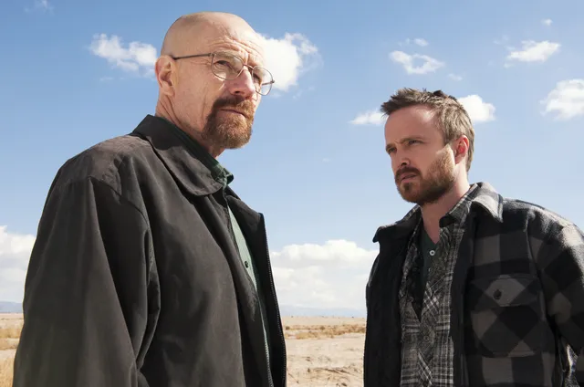
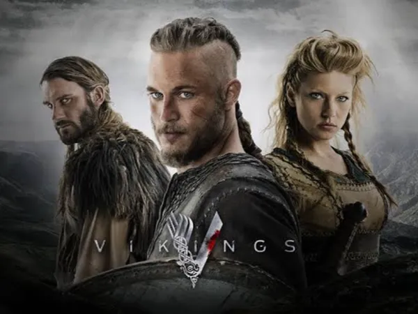
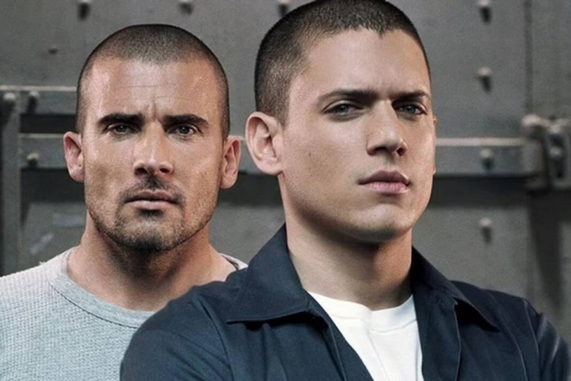
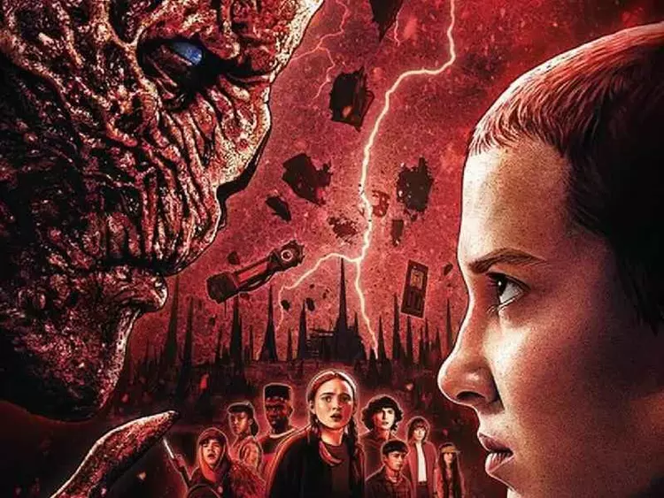
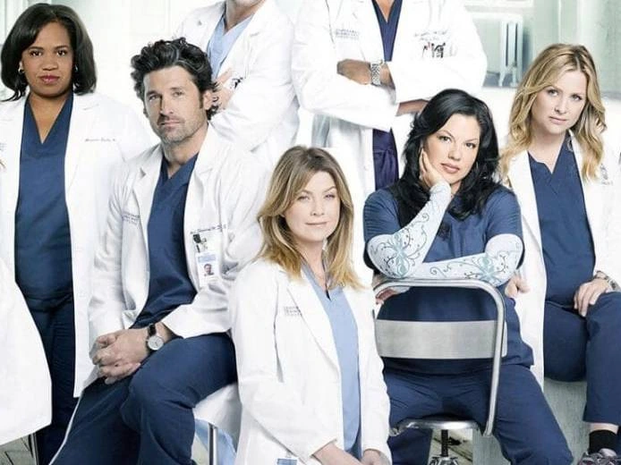
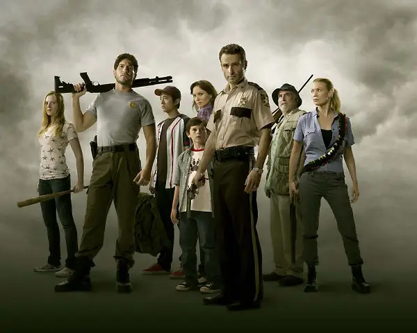

Breaking Bad
Status: concluído
Gênero: drama
Walter White (Bryan Cranston) é um professor de química na casa dos 50 anos que trabalha em uma escola secundária no Novo México. Para atender às necessidades de Skyler (Anna Gunn), sua esposa grávida, e Walt Junior (RJ Mitte), seu filho deficiente físico, ele tem que trabalhar duplamente. Sua vida fica ainda mais complicada quando descobre que está sofrendo de um câncer de pulmão incurável.
Para aumentar rapidamente a quantidade de dinheiro que deixaria para sua família após sua morte, Walter usa seu conhecimento de química para fazer e vender metanfetamina, uma droga sintética. Ele conta com a ajuda do ex-aluno e pequeno traficante Jesse (Aaron Paul) e enfrenta vários desafios, incluindo o fato de seu concunhado ser um importante nome dentro da Agência Anti-Drogas da região.
Vikings
Status: concluído
Gênero: aventura, Drama, Histórico
Vikings segue a vida de Ragnar Lothbrok (Travis Fimmel), o maior guerreiro da sua era. Lider de seu bando, com seus irmãos e sua família, ele ascende ao poder e torna-se Rei da tribo dos vikings. Além de guerreiro implacável, Ragnar segue as tradições nórdicas e é devoto dos deuses. As lendas contam que ele descende diretamente de Odin, o deus da guerra.
Prison Break
Status: concluído
Gênero: drama
Em Prison Break, após a prisão de Lincoln Burrows (Dominic Purcell), condenado por um crime que não cometeu e mandado para o corredor da morte, o engenheiro Michael Scofield (Wentworth Miller) bola um plano elaborado para tirar o irmão da cadeia. Enviado para a penitenciária estadual de segurança máxima Fox River ao lado de Lincoln, Michael começa a executar a sua estratégia, mas logo percebe que está envolvido no meio de uma perigosa conspiração policial e política.
Para garantir a liberdade da sua família e provar a inocência do irmão, ele precisará enganar a Dra. Sara Tancredi (Sarah Wayne Callies) e se associar a perigosos criminosos condenados, como Fernando Sucre (Amaury Nolasco), Theodore 'T-Bag' Bagwell (Robert Knepper) e John Abruzzi (Peter Stormare). Se a fuga for bem sucedida, a dupla ainda precisará fugir e se esconder das autoridades e, sobretudo, daqueles que ameaçam suas vidas.
Stranger Things
Status: em produção
Gênero: drama, fantasia, suspense, terror
Situada no início dos anos 1980, Stranger Things se passa na cidade rural fictícia de Hawkins, Indiana. Como fachada, o laboratório da região realizava experimentos científicos para o Departamento de Energia Americano, quando na realidade, os pesquisadores ali investiram em experimentos com o paranormal e o sobrenatural, incluindo o uso de cobaias humanas. Não intencionalmente, eles criaram um portal para uma dimensão alternativa conhecida como Mundo Invertido, o que iria impactar a vida dos residentes da pequena cidade.
Em 1983, quando Will Byers (Noah Schnapp), um menino de 12 anos, desaparece misteriosamente, o xerife Jim Hopper (David Harbour) inicia uma operação para encontrá-lo. Enquanto isso, Mike (Finn Wolfhard), Dustin (Gaten Matarazzo) e Lucas (Caleb McLaughlin), melhores amigos de Will, decidem procurá-lo por conta própria. Mas as investigações acabam levando o grupo em direção aos experimentos secretos do governo e a Eleven (Millie Bobby Brown), uma peculiar menina perdida na floresta. Assim como as crianças, a mãe Joyce Byers (Winona Ryder) está determinada e fará o impossível para rever o filho.
Grey's Anatomy
Status: concluido
Gênero: drama, médico
Drama médico que acompanha a médica Meredith Grey e outros profissionais do hospital Grey Sloan Memorial, mostrando os desafios de decisões de vida ou morte e a complexidade de suas relações pessoais e profissionais. A série foca no dia a dia dos médicos, suas lutas para conciliar a carreira intensa com a vida pessoal, e os laços que formam entre si enquanto buscam conforto e apoio uns nos outros.
The Walking Dead
Status: concluido
Gênero: drama, terror
Em The Walking Dead, depois de ser baleado e passar meses em coma, o xerife Rick Grimes (Andrew Lincolm) acorda sozinho em um hospital deserto. Para sua surpresa, o mundo como conhecia deixou de existir depois que um perigoso vírus provoca uma infestação de zumbis na cidade de Cynthiana, em Kentucky, nos Estados Unidos. Desesperado, Rick enfrenta a estranha ameaça na expectativa de reencontrar a mulher Lori (Sarah Wayne Callies) e o filho Cal (Chandler Riggs). Ele decide unir-se aos homens e mulheres sobreviventes para que tenham mais força para combater o fenômeno que os atinge.
O grupo percorre diferentes lugares em busca de soluções para o problema. Aos poucos, eles percebem que a infestação de mortos é maior do que pensavam, se espalhando por todo o país, e possivelmente o resto do mundo. A sociedade que conheciam já não existe mais e tudo que resta é o desejo de sobreviver. Em meio ao caos da nova ordem mundial, Rick e seus companheiros percebem que os humanos sobreviventes podem ser uma ameaça maior que os próprios zumbis.